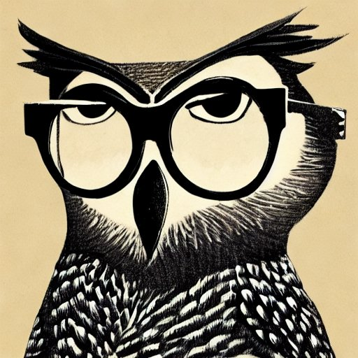
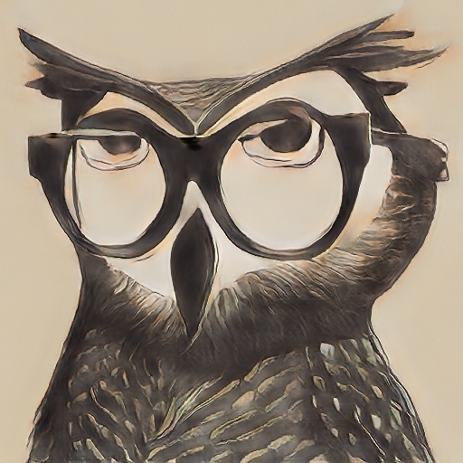

This owl was generated with Stable Diffusion, using the prompt "Owl in glasses":

I tried using google image search to find if there was an original somewhere, but I could not find anything exactly the same. When selecting parts of the image for searching, there were some interesting hits, but nothing exactly the same.
I then passed the image through a style GAN, mostly out of curiosity, and obtained the following image:

I am pretty entertained with the results.
This app is using Node.js , with Chromium , and Electron .